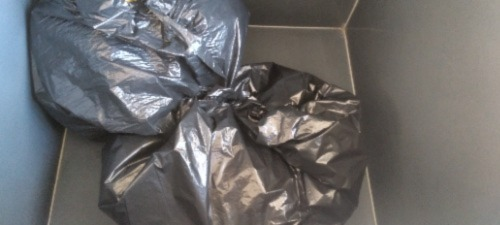

Reciclagem Química
A reciclagem química é um processo que transforma um objeto, que não seria mais utilizado, em uma matéria-prima utilizável novamente. Este processo utiliza a tecnologia para transformar resíduos em produtos químicos básicos que podem ser utilizados na fabricação de novos produtos. Esse método é importante para diminuir a quantidade de resíduos que seriam descartados e que podem causar danos ao meio ambiente.
A reciclagem química funciona através de uma série de processos que transformam os resíduos em produtos químicos básicos. Esses produtos químicos são purificados e separados para serem usados na fabricação de novos produtos, como plásticos, tecidos e combustíveis. É importante destacar que a reciclagem química não é a mesma coisa que reutilização, pois ela envolve a transformação de um material em outro diferente, ao contrário da reutilização que utiliza o mesmo material novamente.
A reciclagem química é benéfica para o ambiente, pois evita o acúmulo de resíduos, reduz novos descartes e diminui o gasto de energia na confecção dos objetos que serão utilizados. Além disso, ela evita que novos materiais sejam produzidos, gerando novos resíduos e poluentes, além de consumir mais recursos.
Em resumo, a reciclagem química é uma prática que utiliza a tecnologia para transformar resíduos em produtos químicos básicos que podem ser utilizados na fabricação de novos produtos. Esse processo é importante para diminuir a quantidade de resíduos descartados e evitar danos ao meio ambiente. Além disso, a reciclagem química evita o gasto de energia na confecção de novos objetos e a produção de novos materiais, reduzindo o consumo de recursos e evitando mais poluição.
Imagem de sacos de lixo para serem reciclados
Passo a passo da Reciclagem Química
A reciclagem química é um processo complexo que envolve a transformação química de materiais descartados em novos produtos. Embora os detalhes específicos do processo possam variar dependendo do material que está sendo reciclado, os passos básicos da reciclagem química são os seguintes:
-
Coleta: O primeiro passo é coletar os materiais que serão reciclados. Esses materiais podem incluir plásticos, borrachas, resíduos orgânicos e outros materiais que possam ser quebrados em seus componentes básicos.
-
Seleção: Após a coleta, os materiais são selecionados e classificados de acordo com suas características físicas e químicas. Isso ajuda a garantir que os materiais sejam processados de maneira adequada e eficiente.
-
Pré-processamento: O material é então preparado para o processo de reciclagem química. Isso pode incluir a remoção de contaminantes, como sujeira, poeira e outros materiais que possam prejudicar o processo.
-
Quebra química: Neste ponto, o material é submetido a processos químicos que os quebram em seus componentes básicos. Esse processo pode variar dependendo do material que está sendo reciclado, mas geralmente envolve a utilização de calor, pressão e produtos químicos para desmontar as moléculas e separar os componentes.
-
Separação: Depois que os componentes básicos são separados, eles precisam ser limpos e refinados. Isso pode envolver processos como destilação, purificação e outros processos químicos.
-
Reutilização: Finalmente, os componentes básicos limpos e refinados são utilizados para criar novos produtos. Esses produtos podem ser idênticos aos produtos originais ou podem ser usados para criar novos materiais e produtos.
É importante lembrar que a reciclagem química é um processo complexo que exige equipamentos e tecnologias especializadas. Além disso, nem todos os materiais podem ser reciclados quimicamente e alguns materiais podem ser mais difíceis ou caros de reciclar do que outros. No entanto, a reciclagem química continua sendo uma ferramenta valiosa para ajudar a reduzir o desperdício e a poluição e promover um ambiente mais sustentável.